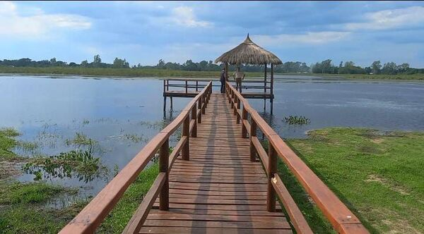

Esta laguna está rodeada de un espectacular paisaje con vegetación propia del Pantanal, como palmeras, ciénagas y cañaverales. La laguna es un gran lugar para realizar actividades como la observación de la flora y la fauna, la pesca y la navegación por la laguna, la caminata por la selva y el campamento en la zona.
La Laguna Makã es un lugar muy tranquilo y de ambiente relajado, y se ha convertido en un destino preferido para las personas que buscan el contacto con la naturaleza y el descanso. Al llegar a la laguna, puedes disfrutar del manantial curativo que hay en el lugar, una fuente de agua cristalina que es muy popular por sus propiedades curativas. La laguna está rodeada de un ambiente de jungla exuberante, con muchos animales salvajes, como la jirafa, el tapir, el araguati y el chajá pinta ojos. En la laguna también existen muchas especies de aves, como el papagayo, el aras y el taricaya. En el sector de riberas de la laguna, existen espectaculares senderos de observación, donde puedes apreciar toda la belleza de la región. En la orilla hay hoteles y alojamientos naturales, donde puedes acampar, pasar la noche en cabañas o hoteles. En la zona también puedes realizar actividades acuáticas como la pesca deportiva, el kayak, la piragua y el submarinismo, si lo deseas.
El clima es típicamente húmedo en la zona, con un promedio de 28 grados Celsius en verano, y 18 grados en invierno. El mejor momento para visitar la Laguna Makã es entre el mes de julio y septiembre, cuando el agua de la laguna es más tranquila y se puede observar con mejor claridad la fauna y flora.
